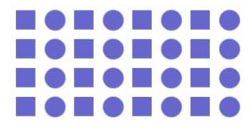
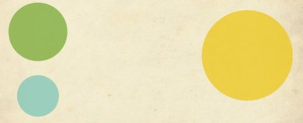
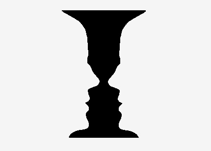
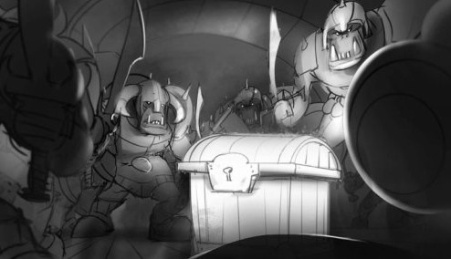

Design Aesthetics
Music
Sounds Happy --> Thumbs Up
Sounds Sad --> Thumbs Down
Our Prediction
First sounded happy
Second sounded sad
Relationships
Major
Minor
Why?
Design workshop
Communications workshop
Design Asthetics
"One idea can light a thousand candles"
- Ralph Waldo Emerson
Ideas need to be propogated to be stay alive.
Relationships
Understanding relationships
Using these relationships
Helps us propagate ideas
Composition
arranging elements in a relationship
Composition
in music
relationship between sounds that pleases the ear
Composition
in painting
But first
a story
Composition
in photography
arranging elements to convey the core idea
guiding the viewer’s eye towards the important elements of your work

Elements of a composition
|
Color Size/Proportion Shape/Form Texture Space |
Principles of composition
Features that convey a sense of relationship within objects
Gestalt
“The whole is more than the sum of its parts”.
Process
1. Brainstorm
take 1 minute to read the instruction carefully so that you understand what you’re required to do
take 4 minutes to come up with 2/3 different ideas / sketches
2. Discuss
take 8 minutes to discuss your ideas with your peer group and select one/two ideas
take 2 minutes to select 1/2 ideas
3. Create
take 10 minutes to create the composition in inkscape from the selected ideas
4. Peer review
take 5 minutes to discuss with your peer the inkscape composition
5. Discussion
take 5 minutes to share the observations
Process example
Activity
1. Create a circle using squares
1. Create a square using circles

Similarity
similar elements -> single group -> related
anomaly -

Activity:
Similarity1.svg
Similarity2.svg
Similarity3.svg
rhythm
use of repeating elements to create patterns, or a sense of motion
rhythm in a design keeps it interesting because you’re reminded of things that you saw earlier as you view the composition
Activity:
rhythm1.svg
rhythm2.svg
rhythm3.svg
balance
the visual weight of the elements in a composition and how they relate to each other
designs in balance (or equilibrium) have their parts arrangement planned, keeping a coherent visual pattern (colour, shape, space)
see saw

Activity:
balance1.svg
balance2.svg
balance3.svg
contrast
used to set elements apart from each other distinguishing by comparing/creating differences focal areas
you can achieve dominance using contrast
dominance creates visual interest in a composition by drawing the viewer’s eye to an important element in the composition.


Activity:
contrast1.svg
contrast2.svg
contrast3.svg
continuity
Elements arranged in a straight line or a smooth curve are perceived as a group, and are interpreted as being more related than elements not on the line or curve
Activity:
continuity1.svg
continuity2.svg
continuity3.svg
closure
A tendency to perceive a set of individual elements as a single, recognizable pattern, rather than multiple, individual elements

Activity:
Arrange the cutouts so that it makes a sensible shape
Activity:
Manipulate the shape of the letter K so that it is still recognizable
Process
1. Research [ 15 minutes ]
2. Brainstorm [ 15 minutes ]
1. Peer review [ 18 minutes ]
1. Brainstorm [ 15 minutes ]
1. Peer review [ 12 minutes ]
1. Composition [ 40 minutes ]


Activity:
Select one
Design a logo for a school focused on STEAM
Design a logo for a tech startup focused on innovation
Design a logo for a political party targeted towards youth